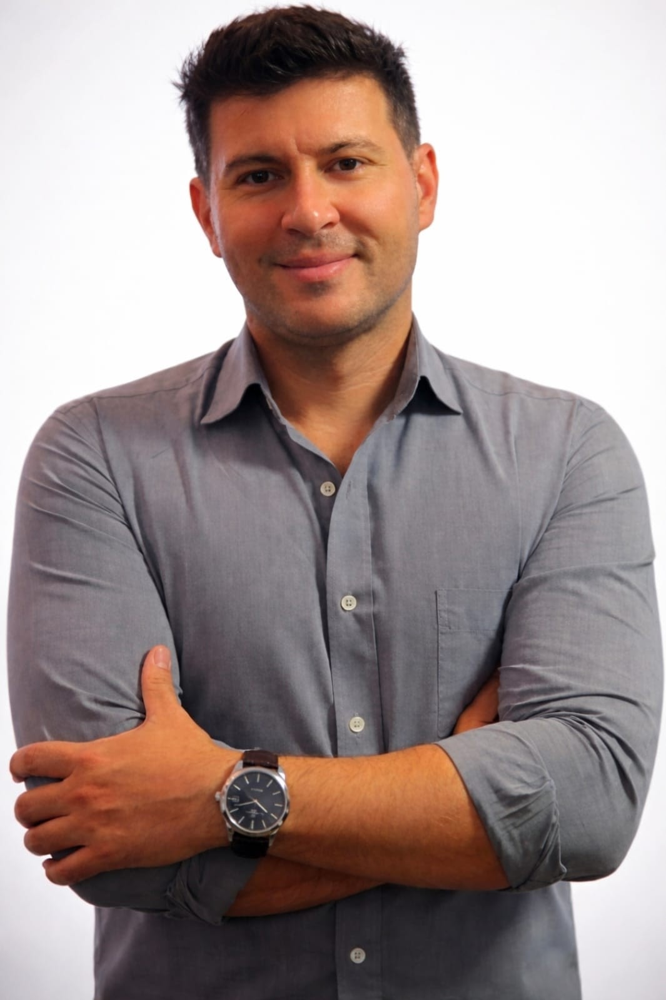

Tratamento da dor
Abordagem focada em identificar a origem da dor e reduzi-la de forma sustentável, não só sintomática.
Fisioterapia & Quiropraxia · Araraquara/SP
Atendimento individualizado em consultório e domicílio, com foco em reabilitação ortopédica, tratamento da dor e recuperação funcional — baseado em evidências científicas.

Sobre
Sou fisioterapeuta e quiropraxista com foco em tratamento da dor, reabilitação ortopédica e recuperação funcional. Cada plano de tratamento é construído a partir da avaliação da pessoa à minha frente — não de um protocolo padrão.
Atendo tanto em consultório quanto em domicílio em Araraquara, para que o cuidado se adapte à rotina de quem está sendo tratado, e não o contrário.
Especialidades
Abordagem focada em identificar a origem da dor e reduzi-la de forma sustentável, não só sintomática.
Recuperação pós-lesão ou pós-cirúrgica, com progressão de exercícios adaptada a cada fase da reabilitação.
Ajustes manuais para restaurar mobilidade articular e aliviar tensões que limitam o movimento.
Foco em devolver a capacidade de fazer o que importa no dia a dia — trabalhar, treinar, viver sem limitação.
Como funciona
Você escolhe o que faz mais sentido para a sua rotina — o plano de tratamento é o mesmo padrão de qualidade nos dois casos.
Estrutura própria para avaliação e sessões, em Araraquara.
Atendimento no conforto da sua casa, para quem tem mobilidade reduzida ou rotina mais corrida.
Contato
Prefere falar direto? Chama no WhatsApp. Se preferir, deixe sua mensagem por aqui que eu retorno assim que possível.